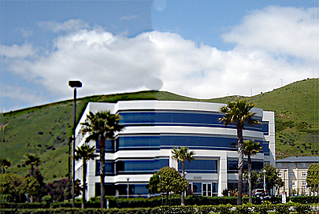
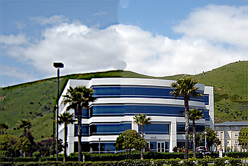

Lai apgūtu raksturgrafikas pamatus, mēs izmantojām "GIMP" programmatūru.
Attēla rediģēšana:
 

Kā otro mācību gada tēmu mēs apguvām vektorgrafiku "Inkscape" programmatūrā, nobeidzot tēmu ar logotipa izveidi.

Noslēdzot attēlu apstrādes tēmu, mēs minimāli aplūkojām 3D grafiku "Tinkercad" progrmmatūrā.

Video montēšanai mēs izmantojam "Clipchamp" programmu
Kļūstot par teksta apstrādes meistariem, mēs izmantojām "Word" programmatūru.
Priekšmetu rādītaja paraugs:

Līdz sīm mūsu pēdēja pabeigtā tēma ir izklājlapas, mēs izmantojām "Excel" programmatūru